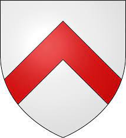

Antavla
12017861 Errick of Carrick
Blev högst 79 år.

Far:
Duncan Carrick (1174 - 1250)
Mor:
Avelina Fitzwalter (1179 - 1202)
Född:
1201 Argyll and Bute, Scotland.
[1]
Död:
1280 Lochawe, Agryll and Bute, Scotland.
[1]
Barn med
12017860 Sir Gillespic Archibald Campbell of Menstrie (- 1280)
Barn:
Colin Campbell of Lochow (1230? - 1294)
Personhistoria
Årtal
Ålder
Händelse
1201
Födelse 1201 Argyll and Bute, Scotland
[1]
1202
Modern
24035723 Countess Avelina Fitzwalter
dör 1202 England
[2]
1230?
Sonen
6008930 Sir Colin Campbell of Lochow
föds omkring 1230 Lochow, Argyllshire, Scotland
[3]
1250
Fadern
24035722 Earl Duncan Carrick
dör 1250-06-13 Argyll, Scotland
[2]
1252
Barnbarnet
3004465 Lady Helen nic Collin Campbell
föds 1252 Lochawe, Argyll and Bute, Scotland
[4]
1280
Partnern
12017860 Sir Gillespic Archibald Campbell of Menstrie
dör 1280 Lochow, Argyllshire, Scotland
[5]
1280
Död 1280 Lochawe, Agryll and Bute, Scotland
[1]
Källor
[1]
Find a grave
[2]
Keith Montgomery
[3]
Morin.com
[4]
wikitree
[5]
comrade28